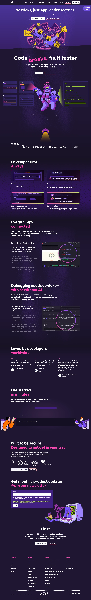

Sentry 主题
Sentry 的 Design.md 主题展示，围绕开发工具、媒体内容、运营监控、暗色界面组织页面。
Error monitoring. Dark dashboard, data-dense, pink-purple accent.
开发工具媒体内容运营监控暗色界面数据仪表盘运营系统SaaS 产品浅色界面B2B 产品效率工具专业工具

来源
- 来源
- getdesign.md
- 镜像
- github:VoltAgent/awesome-design-md
- 网站
- https://sentry.io/
- 详情
- https://getdesign.md/sentry/design-md
色板
#150f23: #150f23#1f1633: #1f1633#ffffff: #ffffff#c2ef4e: #c2ef4e#fa7faa: #fa7faa#6a5fc1: #6a5fc1#422082: #422082#79628c: #79628c#f0f0f0: #f0f0f0#efefef: #efefef#362d59: #362d59#cfcfdb: #cfcfdb
字体
display: Sentri Displaybody: Rubikmono: Menlohints: Sentri Display,Rubik,Menlo,Monaco,Ubuntu Mono,Inter
圆角
control: 6pxcard: 12pxpreview: 18pxpill: 9999pxsource: design-md
间距
xxs: 2pxxs: 4pxsm: 8pxmd: 12pxlg: 16pxxl: 24pxxxl: 32pxsection: 96pxsource: design-md
使用建议
建议
- 建议：Reserve {colors.accent-lime} for keyword-highlight chips inside display headlines and the footer squiggle divider — never use it as a button background, never as body text。
- 建议：Pair every {button-primary} with {typography.button-cap} in uppercase with 0.2px tracking — the cadence is part of the brand, not a stylistic option。
- 建议：Treat the dark canvas ({colors.surface-canvas-dark}) and light canvas ({colors.surface-canvas-light}) as two complete worlds — let one own marketing/feature pages and the other own transactional pages, with no half-measures。
- 建议：Use sticker mascots to break section boundaries — let them overlap, tilt, and float; constraining them inside cards drains their personality。
- 建议：Use {card-pricing-featured} (dark inverted tier) instead of an accent-bordered light tier for the featured pricing column。
避免
- 避免：introduce additional accent colors beyond {colors.accent-lime} and {colors.accent-pink} — adding teal, orange, or yellow dilutes the violet-and-lime signature。
- 避免：apply drop shadows to cards on dark canvas — depth comes from texture and illustration, not from light-on-dark shadows that would muddy the violet。
- 避免：use {typography.display-hero} (88px) for anything except the marketing hero — even sub-pages cap at {typography.display-large} (60px)。
- 避免：put body text in {colors.accent-lime} — it's a chip color, not a type color, and breaks contrast at body sizes。
- 避免：soften the {colors.primary} button to a brand-violet — the near-black is the point; it reads as the most authoritative action regardless of canvas polarity。
查看 DESIGN.md